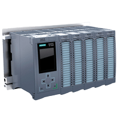
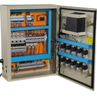

Nuestros Servicios:
-
Programación de PLC:
Nos encargamos del diseño y programación de controladores lógicos programables (PLC), esenciales para la automatización y el control de procesos industriales. Nuestros expertos desarrollan soluciones a medida para garantizar que sus sistemas funcionen de manera óptima y eficiente.
-
Desarrollo de pantallas SCADA:
Diseñamos y programamos sistemas SCADA que permiten la supervisión y control de sus procesos industriales en tiempo real. Los sistemas SCADA proporcionan una interfaz gráfica que facilita la monitorización y gestión de todas las operaciones desde una ubicación central.
-
Programación de automatización integral:
Ofrecemos soluciones completas de automatización que abarcan desde el diseño conceptual hasta la implementación y el mantenimiento de los sistemas. Nos encargamos de cada detalle para asegurar la optimización de sus procesos industriales.
-
Diseño de tableros eléctricos:
Diseñamos, fabricamos y ensamblamos tableros eléctricos a medida para satisfacer las necesidades específicas de cada proyecto. Nuestros tableros cumplen con los más altos estándares de calidad y seguridad.